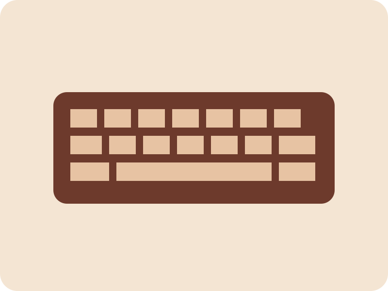

Карточка товара
Механическая клавиатура MK-100
Хит продаж

Компьютерные аксессуары / Клавиатуры
Для точной и комфортной работы
Компактная клавиатура с механическими переключателями, регулируемой RGB-подсветкой и прочным корпусом.
- русская и английская раскладка;
- подключение через USB;
- 87 клавиш и 12 режимов подсветки;
- гарантия 12 месяцев.
4 990 руб.
Подробности
Технические характеристики
| Характеристика | Значение |
|---|---|
| Тип | Механическая |
| Подключение | Проводное, USB |
| Количество клавиш | 87 |
| Подсветка | RGB, регулируемая |
| Материал | Пластик и металл |
| Гарантия | 12 месяцев |